First decision: who owns the media
The first DIT job is not inserting a card; it is assigning responsibility: who copies, who verifies, who transports, who receives. “Media is backed up” is not enough; write where, when, and who confirmed. If there is no DIT, the camera assistant can cover, but the duty goes on the call sheet.
Before any card is formatted, at least two complete copies must exist off the same computer or drive. Formatting after one copy is the least forgivable set error.
Copy and verify: checksums are not optional
Use software that verifies and generate an MD5/xxHash manifest. Do not judge by file count; run the checksum. If it fails, copy again; do not “try once more and hope.” Keep the card’s original folder structure; do not rename during copy.
Rename after copy: project_date_camera_card_clip. Log the rename so it stays traceable. Keep the original card until wrap; do not reuse early.
Three copies: two on set, one off set
Three copies are not three drives in one bag. At least one lives in a different physical location or goes back to the office that day. Do not format before backup; do not format immediately after either—wait for next-day confirmation.
Label each copy: project, date, contents, checksum filename. Avoid “primary/secondary”; write the location and the owner.
Five DIT steps: copy—verify—backup—proxy—report

Proxies and handoff: make the edit open ready
Proxies must match source frame rate, timecode, and filename or the round-trip fails. Choose proxy resolution for the edit machine, 1080p or 720p; too low a bitrate makes the editor misjudge noise.
Handoff: source, proxies, checksum manifest, script notes, audio, LUTs, report. The report lists card numbers, clip counts, total duration, and anomalies (bad frames, dropped frames, audio gaps).
Failure case: three backups in one room
On a location shoot, the DIT made three copies, all in one hotel room: two drives and a laptop. The next day the room lost power, the laptop drained, and both drives were soaked in the same bag. All three copies failed together.
The only fix was a re-shoot. Real three-copy backup separates locations: one carried, one in the hotel safe, one shipped or uploaded that day. Backup is location, not count.
Cost and acceptance
Low: camera assistant doubles as DIT, two SSDs plus checksum software, ¥1,000–3,000/day. Mid: dedicated DIT, three copies, proxies, report, ¥3,000–8,000/day. High: multicam, on-set grade/comp, LTO archive, ¥8,000–20,000/day.
Image note. Covers, diagrams and step images on this page are editorial illustrations or structure diagrams, not photographs of a test performed here; they are not evidence of measured gear performance. Where an image is AI-assisted, the caption says so. Read the test conditions in the text before treating an image as proof.